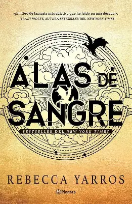
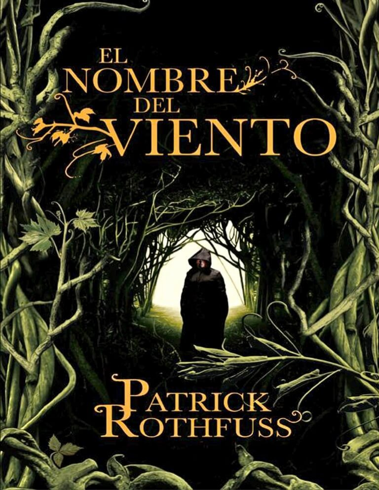
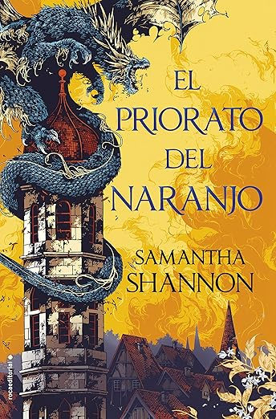
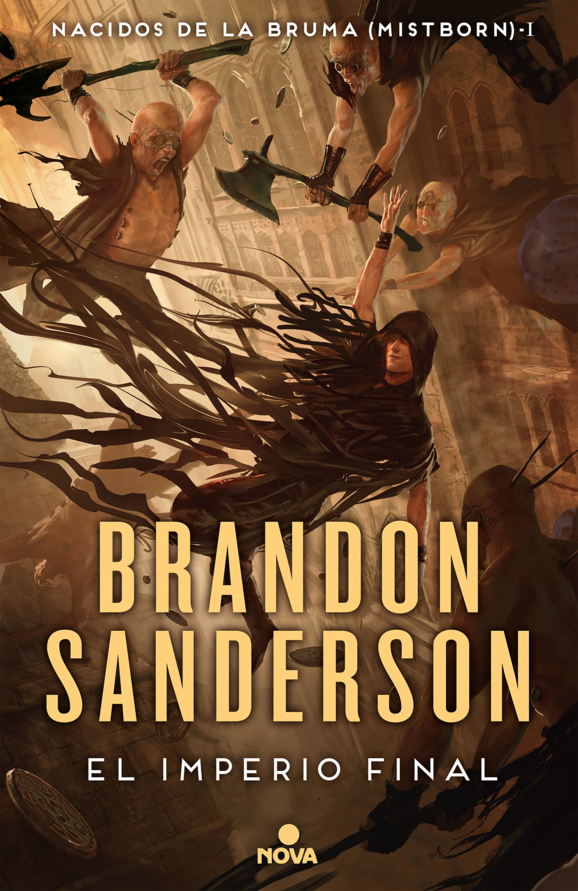
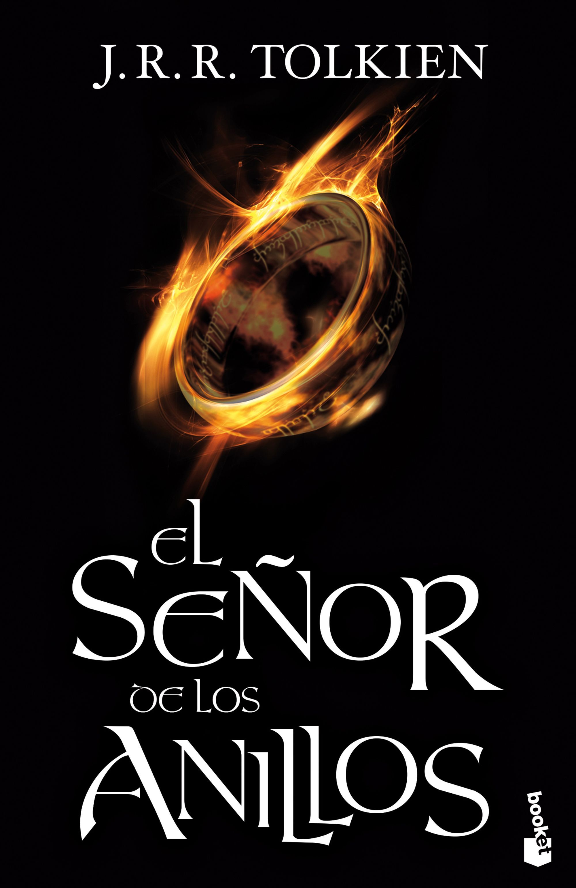
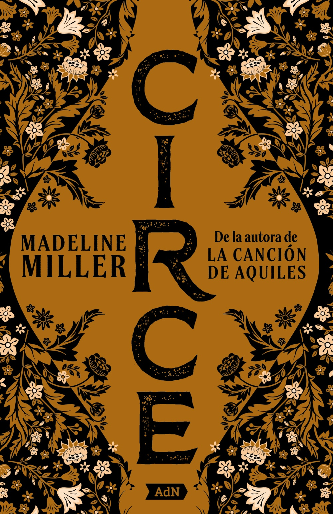

Fantasía
Viaja a mundos imposibles, donde la magia es real y la aventura te espera en cada página.

Cuarta Ala
Violet Sorrengail debía vivir una vida tranquila, pero por orden de su madre, se une a los jinetes de dragones.

El Nombre del Viento
La legendaria historia de Kvothe, un músico, mendigo, ladrón, estudiante, mago, héroe y asesino.

El Priorato del Naranjo
Un mundo de reinas, magos y jinetes de dragones que deben unirse para evitar la aniquilación total.

El Imperio Final
En un mundo de cenizas, una joven ladrona descubre que tiene los poderes de los nobles que la oprimen.

El Señor de los Anillos
El viaje épico de Frodo para destruir el Anillo Único y salvar a la Tierra Media de la oscuridad.

Circe
La historia de la diosa Circe, desterrada por su poder, que se cruza con los mortales más famosos.